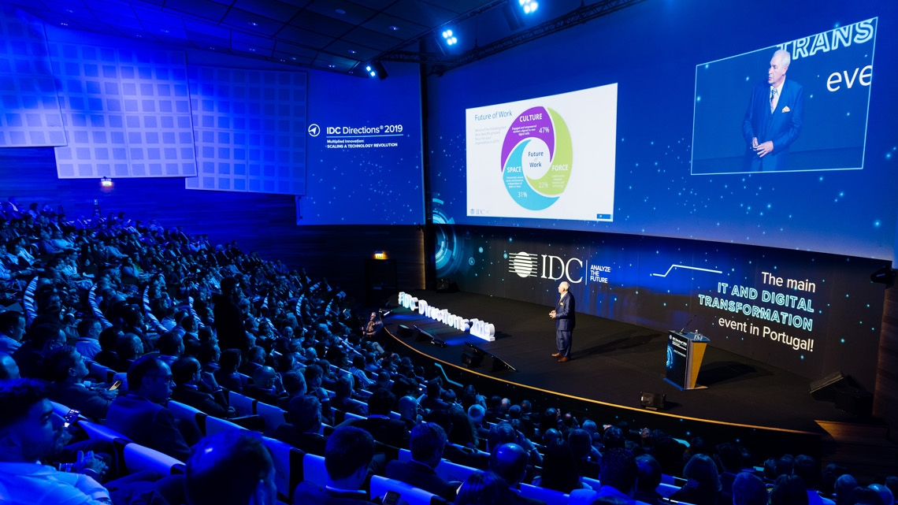
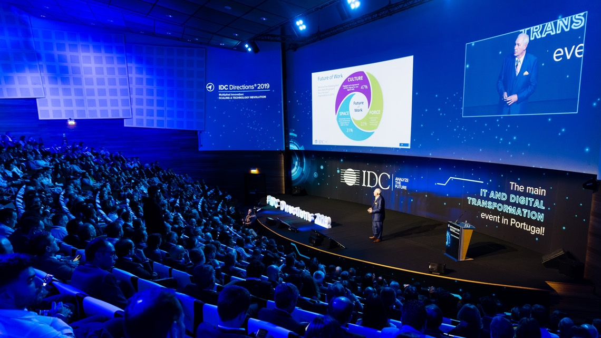

Techxchange 2023
Майбутні інновації та технологічний обмін
Ласкаво просимо на найбільшу подію у світі технологій та інновацій! TechXChange 2023 - це місце, де ви знайдете найактуальніші ідеї, технологічні рішення та можливості для розвитку вашого бізнесу.
Зареєструватися


 
